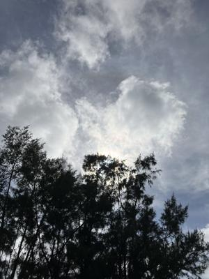
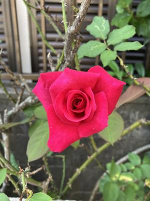

うるがいの話 ある日
最新: ハブの話【うるがいの話 ある日】とは 一日だけのプログです
『うるがいの話』の最新一日だけのプログで、通信料が少なく経済的だ。カニの画像をクリックすると全ての日付が載る『うるがいの話』サイトを表示します
|
|
【うるがいの話】 うるがい(ｳﾙｶﾞｲ urugai)とは、『もずくがに』の名前でとても大きくなります。 |
|---|---|
|
|
【カミマヤーの話】 猫のことを方言でマヤーといいます。カミマヤー（kamimayaa）とは、神の猫のことです。 |
|
【たながぁの音楽】 たながぁ（ﾀﾅｶﾞｰ tanagaa）とは手長えびのことで、何種類かあり大きいのは車 エビぐらいになります。 |

|
【ぶながぁの話】 ぶながぁ(ﾌﾞﾅｶﾞｰ bunagaa)とは、赤い髪の毛、赤い身体、そして身長は１ｍ２０ｃｍ ぐらい、川の蟹を食べているの目撃された。場所は沖縄県国頭郡大宜味村のと ある村僕の隣近所に住んでいる爺さんから、聞いた話です。 |
|
|
【ギーマの話】 ギーマ(giima)とは、山原の里山に咲くスズランに似た、 花を付けます。実は食べられます、 気が付くと口の周りが紫になっています。 |
2024年05月20日 (月）ハブの話
16:01

『イオウはハブを遠ざける？』迷信を捨てて有効な対策を ヘビ対策ボラン
ティア ７２歳男性 琉球新報
ん？、
イオウの粉をまいたり、アヒルを飼うとハブを遠ざけることができるという
迷信がありますが、全く効果はありません。沖縄県
ホー、辺士名高校のワンダーフォーゲル部は、キャンプを行う時は必ずテン
トの周りに、イオウを撒いていた！。さらに、
『アカマタがいると、ハブは少ないとの説があるが、全く逆で、両者の捕獲
数は正比例する』
なんと！
アカマタがいるところにハブはいないと言われていますが、アカマタとハブ
は同じ場所 にも生息します。沖縄県
フムフム、シークワーサーの木を植えているところでアカマタを見ると、叔
父さん、『アカマタがいるとハブはいない』と言っていた。
以下は、私とハブとの思い出である。
私のオジーさん（母親の親父）は、サトウキビ畑でハブに咬まれ亡くなった
小学生の頃、養鶏を営んでいた叔父さん（母親の兄）の家で、ハブを見た！
ということで、夜中、村中の人が集まり、床下まで剥がしてハブを殺した。
キョウタカという同級生は、通学途中、畑の畔道でハブに噛まれてしばらく
休学していた。
中学生のころ、キンナーという山奥の村に住んでいる同級生の家の床の間に
ハブがドクロを巻いていたので、すぐさま殺したと学校で聞いた。
従妹のエイコと一緒に、キンナーの近くの山奥にあるヤマモモを取るため木
に載って実と取ろうとするとハブが、近くの木にいた！。驚き、ヤマモモは
取らずに山を下りた。
ワンダーフォーゲル部で、比地大滝（国頭村）でキャンプをしていると国際
大学のワンダーフォーゲル部にいたヤスナリ（姉の同級生）が、ハブをリュ
クにぶら下げていた。食べるとのこと、ヤスナリは大滝の傍にある与那覇岳
への登山道を仲間と登っていった。ハブは美味しいとのこと。
大学生の夏に電灯を持って夜中、川へ行くとハブが２匹いたので殺し家に持
ち帰った。多幸山ハブセンター（恩納村）では一匹５千円で引き取ると言っ
たが、浜に埋めた。母親はとても怒っていたが・・・・・・。
ハルコ小母さん（母親の妹）達が、里山に行きたいというので登っていると
２メートル近くあるハブが、３０センチメートルほどの太さの木に、体を巻
きなが登っていった（ウソみたいな本当のこと）。皆、啞然として山を下り
る。
子供達を車に載せ、キンナーの山道をドライブする。と、道路にハブがくね
くね、車でひき殺す。
自宅の近所の道路脇で、ヨメがハブを見たと大騒ぎする（通報はせず）。
家の周りの境界を、調べていた生協の人がハブをみましたと報告があった。
（ヨメには、今だ内緒である）
隣近所で可愛がっていたチビネコが、ハブに咬まれ重症を負う。可愛かった
子猫は動物病院が引き取った。

『クマに注意』がある百名山の滋賀県伊吹山に登ったとき、栗の木の近くを
歩いていると『カサガサ』と音がした、クマかも？ととても怖い思いとした
。私はハブよりクマが怖い！
１５時４７分 ビットコインの総資産 ￥３０、２０４（↓７６）